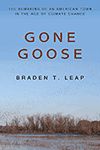

|
Archaeology at the Site of the Museum of the American Revolution
A Tale of Two Taverns and the Growth of Philadelphia
Yamin, Rebecca
Foreword by R. Scott Stephenson
Using archaeological finds to tell the story of the growth of Philadelphia in microcosm
160 pp • 5x8 • Fall 2018
paper 978-1-4399-1642-1
|

|
Challenging Beijing's Mandate of Heaven
Taiwan's Sunflower Movement and Hong Kong's Umbrella Movement
Ho, Ming-sho
Analyzing the dynamics of two recent nonviolent, student-led protests in light of China's growth and power
288 pp • 6x9 • Fall 2018
paper 978-1-4399-1707-7
cloth 978-1-4399-1706-0
|

|
Color Me...Cherry & White
A Temple University Coloring Book
The first adult coloring book for the worldwide Temple University community
50 pp • 8.5x11 • Fall 2018
paper 978-1-4399-1858-6
|
|
The Eagles Encyclopedia
Champions Edition
Didinger, Ray with Robert S. Lyons
An updated edition of the best-selling book The Eagles Encyclopedia celebrating the Super Bowl Champions, the E-A-G-L-E-S!
496 pp • 8.3125 x 10.875 • Fall 2018
cloth 978-1-4399-1848-7
|
|
The Evangelical Crackup?
The Future of the Evangelical-Republican Coalition
Edited by Djupe, Paul A. and Ryan L. Claassen
Explaining evangelicalism's relationship to the party system
312 pp • 6x9 • Fall 2018
paper 978-1-4399-1522-6
cloth 978-1-4399-1521-9
|
|
Extraordinary Racial Politics
Four Events in the Informal Constitution of the United States
Lee, Fred
Explores the promise and perils of racially-based mass mobilizations and state emergencies
238 pp • 6x9 • Fall 2018
paper 978-1-4399-1576-9
cloth 978-1-4399-1575-2 |
|
Final Negotiations
A Story of Love, Loss, and Chronic Illness
Revised and Expanded
Ellis, Carolyn
Foreword by Arthur Bochner
A poignant autoethnography that reflects back forty years on loving someone chronically ill
426 pp • 6x9 • Fall 2018
paper 978-1-4399-1716-9
cloth 978-1-4399-1715-2
|

|
French Gastronomy and the Magic of Americanism
Fantasia, Rick
Analyzing the effects of corporate-driven global industrial processes on the practices, and the practitioners, of French gastronomy
262 pp • 6x9 • Fall 2018
paper 978-1-4399-1230-0
cloth 978-1-4399-1229-4
|
|
From Confinement to Containment
Japanese/American Arts during the Early Cold War
Tang, Edward
Examining the legacies of four Japanese and Japanese/American artists and writers in the postwar era
292 pp • 6x9 • Fall 2018
paper 978-1-4399-1749-7
cloth 978-1-4399-1748-0
|
 |
Gone Goose
The Remaking of an American Town in the Age of Climate Change
Leap, Braden T.
How members of a rural town in the Midwest worked to sustain their culture and community in response to climate change
296 pp • 6x9 • Fall 2018
paper 978-1-4399-1734-3
cloth 978-1-4399-1733-6
|
|
Mediating America
Black and Irish Press and the Struggle for Citizenship, 1870–1914
Shott, Brian
How black and Irish journalists in the Gilded Age used newspapers to shape and constrain the struggle for American belonging
268 pp • 6x9 • Fall 2018
paper 978-1-4399-1558-5
cloth 978-1-4399-1557-8
|
|
Mr. All-Around
The Life of Tom Gola
Grzybowski, David
Foreword by Bill Raftery
The first, definitive biography of La Salle basketball icon Tom Gola
200 pp • 6x9 • Fall 2018
cloth 978-1-4399-1679-7
|
|
Not from Here, Not from There/No Soy de Aquí ni de Allá
The Autobiography of Nelson A. Díaz
Díaz, Nelson A.
With a Foreword by Henry Cisneros
A lively autobiography by a community activist, judge, and public advocate who blazed a trail for Latinos in Philadelphia
296 pp • 6x9 • Fall 2018
cloth 978-1-4399-1360-4
|
|
Perceptions of a Polarized Court
How Division among Justices Shapes the Supreme Court's Public Image
Salamone, Michael F.
Is the Supreme Court immune to the stain of polarization?
206 pp • 5.25x8.5 • Fall 2018
paper 978-1-4399-1695-7
cloth 978-1-4399-1694-0
|
|
Policing in Natural Disasters
Stress, Resilience, and the Challenges of Emergency Management
Adams, Terri M. and Leigh R. Anderson
How disaster work impacts law enforcement officers and first responders based on some of the worst disasters in modern history
248 pp • 5.25x8.5 • Fall 2018
paper 978-1-4399-1837-1
cloth 978-1-4399-1836-4 |

|
Push Back, Move Forward
The National Council of Women's Organizations and Coalition Advocacy
Woliver, Laura R.
An in-depth explanation of the coalition dynamics—origin, workings, strengths, and weaknesses—of the National Council of Women's Organizations
248 pp • 6x9 • Fall 2018
paper 978-1-4399-1683-4
cloth 978-1-4399-1682-7 |
|
Sticky Rice
A Politics of Intraracial Desire
Wu, Cynthia
Creating a queer genealogy of Asian American literary criticism
212 pp • 6x9 • Fall 2018
paper 978-1-4399-1582-0
cloth 978-1-4399-1581-3
|

|
Undermining Intersectionality
The Perils of Powerblind Feminism
Tomlinson, Barbara
A sustained critique of the ways in which scholars have engaged with and deployed intersectionality
280 pp • 6x9 • Fall 2018
cloth 978-1-4399-1650-6
|
|
Where I Have Never Been
Migration, Melancholia, and Memory in Asian American Narratives of Return
Chu, Patricia P.
Reframing the Asian American literary tradition through stories of return to Asia
286 pp • 6x9 • Fall 2018
paper 978-1-4399-0226-4
cloth 978-1-4399-0225-7 |
|
Women Take Their Place in State Legislatures
The Creation of Women's Caucuses
Mahoney, Anna Mitchell
Investigating the opportunities, resources, and frames that women utilize to create legislative caucuses
260 pp • 5.5x8.25 • Fall 2018
paper 978-1-4399-1597-4
cloth 978-1-4399-1596-7
|
Click here to download the catalog (pdf). |